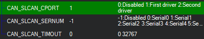
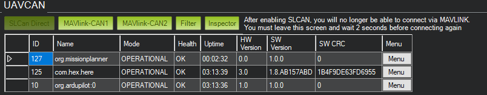
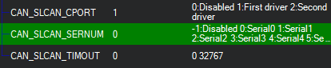

SLCAN Access on F4 based Autopilots¶
Enabling SLCAN allows the autopilot to connect to CANBUS through USB on PC. It allows viewing, configuration and software updates of devices connected to the CANBUS. There are two different applications for using SLCAN to modify DroneCAN device parameter: DroneCAN GUI or Mission Planner. But first, the SLCAN interface must be enabled.
Note
SLCAN access via COM port is disabled when armed to lower cpu load. Use SLCAN via MAVLink instead. MAVLink access is generally preferred in any case.
Enabling SLCAN¶
Connect the autopilot to Mission Planner.
Set CAN_SLCAN_CPORT = 1, if not already set, or =2 if its desired to examine the second CAN bus, if the autopilot provides it, and reboot.
Connect normally to Mission Planner and navigate to Initial Setup->Optional Hardware->UAVCAN(DroneCAN). Click on SLCan Mode CAN1, and any attached DroneCAN nodes using Driver 1 will appear and firmware updates or parameter changes of the node are now available. To return to normal Mission Planner operation, leave this tab for 2 seconds and reconnect to Mission Planner.
Making Changes to DroneCAN Devices¶
Once SLCAN has been enabled, you can use Mission Planner to make changes immediately to device parameters or firmware update.
DroneCAN GUI tool can also be used, but requires a slightly different setup:
Enabling Use of DroneCAN GUI¶
Connect the flight autopilot to Mission Planner. Set the parameter CAN_SLCAN_CPORT = 1 , if not already set, and reboot.
Reconnect Mission Planner and set CAN_SLCAN_SERNUM = 0. This will direct the output to the autopilot’s SERIAL0 port which is normally the autopilot USB connection. Be sure that the CAN_SLCAN_TIMOUT parameter is 0 to prevent timeouts.
Do not reboot, and click SLCAN Mode CAN1 in the Initial Setup->Optional Hardware->UAVCAN(DroneCAN). Now open the DroneCAN GUI tool.
Note
In this mode, you can also use Mission Planner’s DroneCAN page to make changes, but it will not connect normally as a MAVLink Ground Station. To re-connect Mission Planner, you will need to reboot the autopilot.